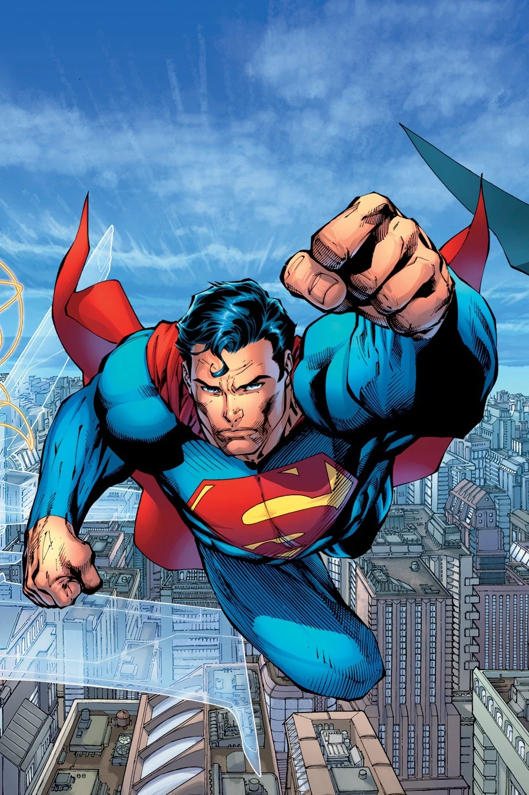

Superman
Kal is rocketed from the doomed planet Krypton to Earth, where he is found and raised by a kind couple known as Jon and Martha Kent in Smallville, Kansas.
Growing up, he was taught the true values of being human and finds out he is developing super-powers. As he transitions to becoming a man, he travels to the city of Metropolis where he persures his dreams of becoming a reporter and becomes Superman to protect the people.
